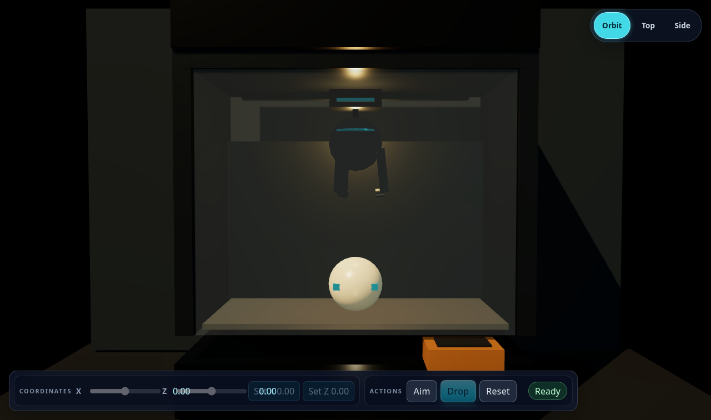
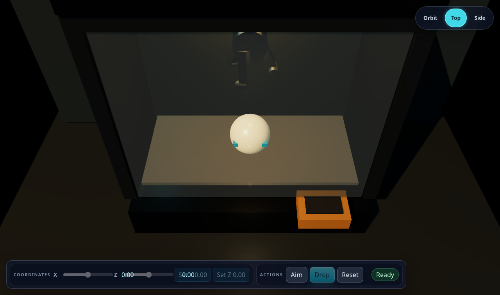
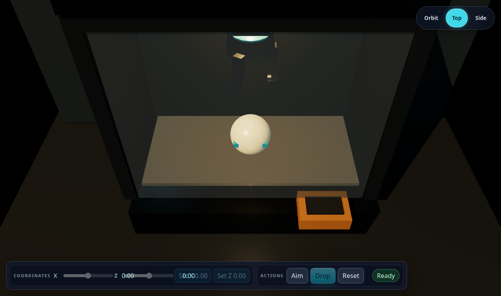
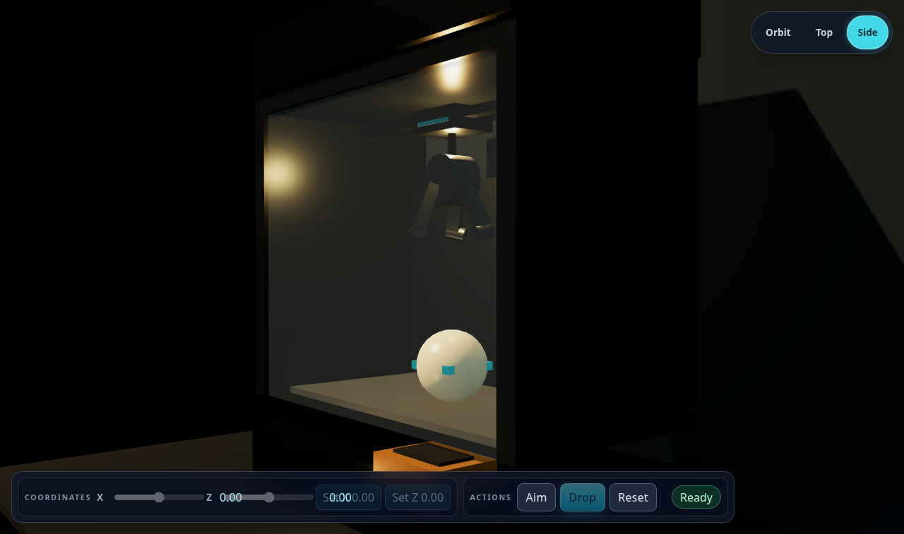
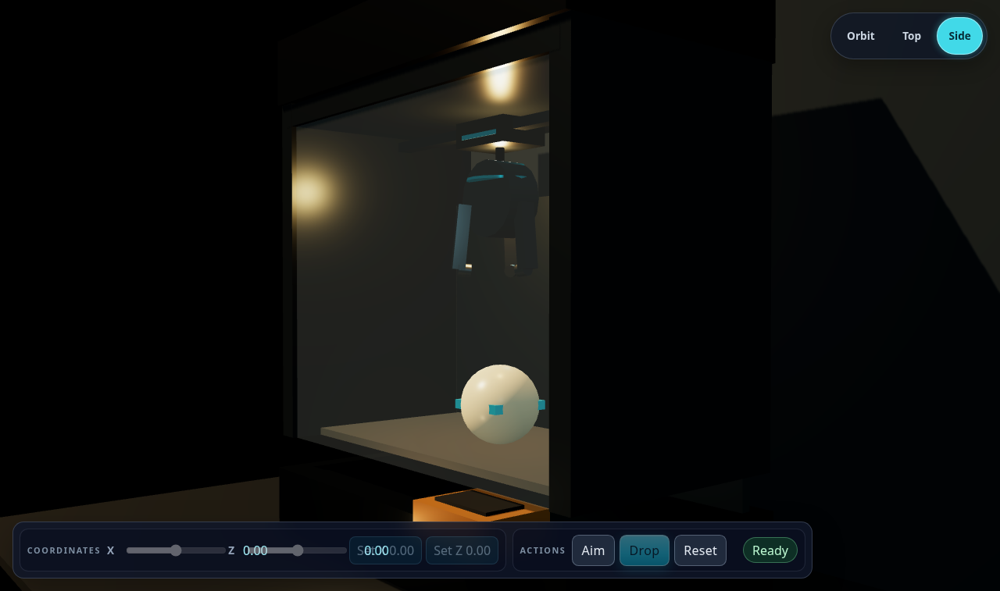
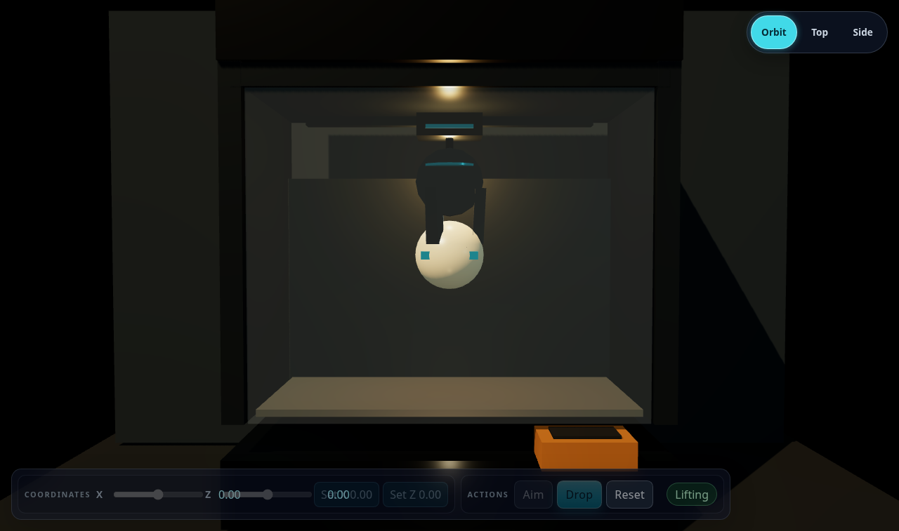

De-twisted fingers, inward-pointing hooks, wider grip ring so the claw wraps the prize instead of sinking into it. Screenshots from the running app (headless Chrome, SwiftShader).
Parked (open) — default orbit view · BEFORE vs AFTER
Before: blades lean tangentially in one direction (pinwheel), tips hooks run sideways, head is narrow (r 0.22).

After: blades hang straight and flare radially, hooks point inward, head widened (r 0.30) to cover the new ring.
Parked — top view · BEFORE vs AFTER

Before: each blade and its hook is rotated tangentially around the circle — a swirl, not a symmetric claw.

After: three blades spaced 120° with hooks curling inward toward the axis; symmetric.
Parked — side view · BEFORE vs AFTER

Before: visible tangential lean of the blades (all leaning the same rotational way).

After: blades hang straight; the far blades read symmetric with the near one.
After — closed around the prize (gripping)

Closed tips land on the prize surface (blades hug the upper sides; the small hook presses in). Previously the blades sank ~0.22 units inside the prize sphere.
After — release at the top (open)
Fingers open only at the top, classic arcade release. Full drop cycle completes with grip approved (contact-approved, joint created, released).